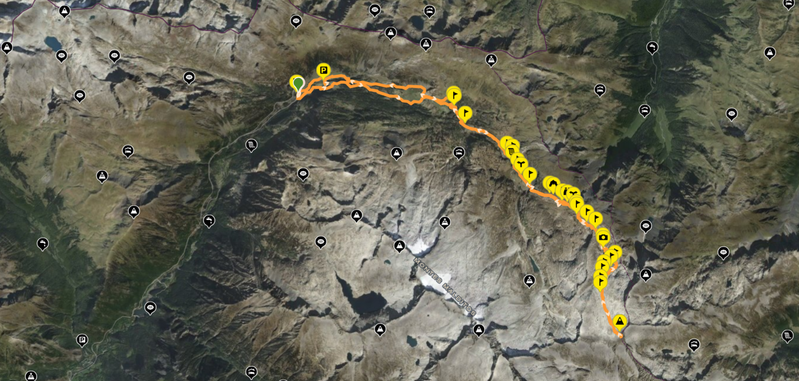
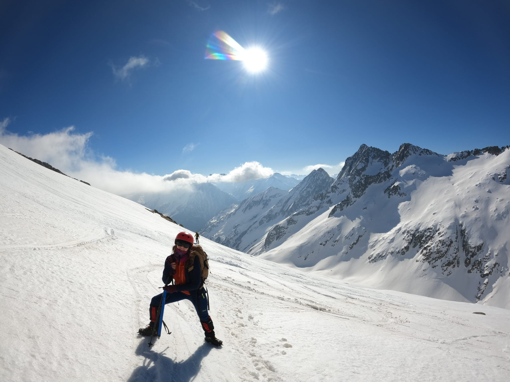
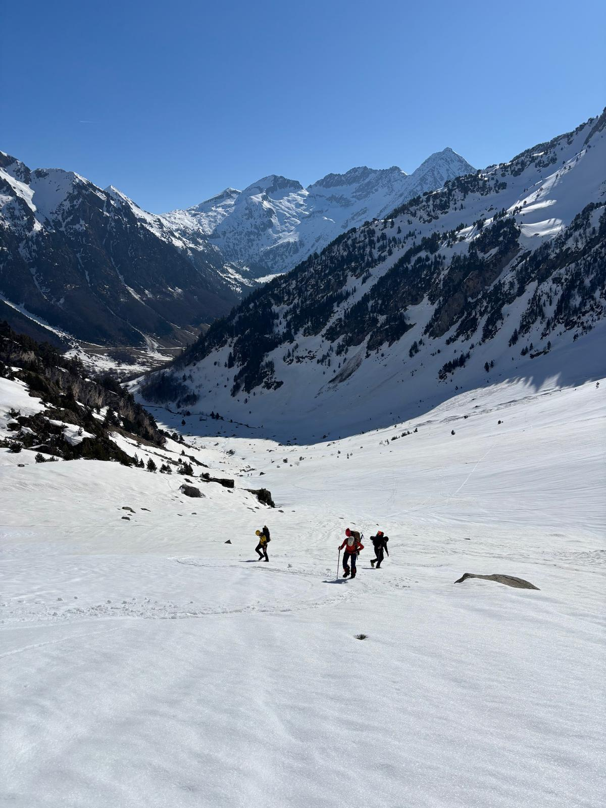

Pic Mulleres
El Pic de Molières, també conegut com Mulleres, és un cim de 3.010 metres situat als Pirineus, a la frontera entre Espanya i França. Forma part del massís de la Maladeta i destaca per ser una muntanya accessible dins dels tresmils, amb vistes espectaculars de cims propers com l’Aneto.
Dades principals
- Altitud: 3.010 metres
- Ubicació: entre la Vall d’Aran i l’Alta Garona (França)
- Massís: Maladeta
- Zona protegida: dins del Parc Natural Posets-Maladeta
Com arribar-hi
Primer has d’anar fins al poble de Benasque i des d’allí seguir la carretera A-139 cap al nord durant uns 12 km fins al final de la vall, on trobaràs l’aparcament dels Llanos del Hospital. Des d’aquest punt, la ruta comença travessant la zona propera a l’hotel i seguint les indicacions cap al vall de Remuñe, amb un camí inicialment suau que acompanya el riu i va guanyant alçada progressivament fins arribar a l’Ibón de Remuñe. A partir d’aquí, el recorregut es torna més de muntanya i encares la pujada final fins al cim del Mulleres. Es tracta d’una excursió llarga, d’unes 6 a 8 hores en total amb uns 1.200 metres de desnivell, per la qual cosa és recomanable començar aviat, portar prou aigua i roba adequada, i tenir en compte les condicions meteorològiques, especialment si hi ha neu.
Recorregut

Galeria d'imatges

